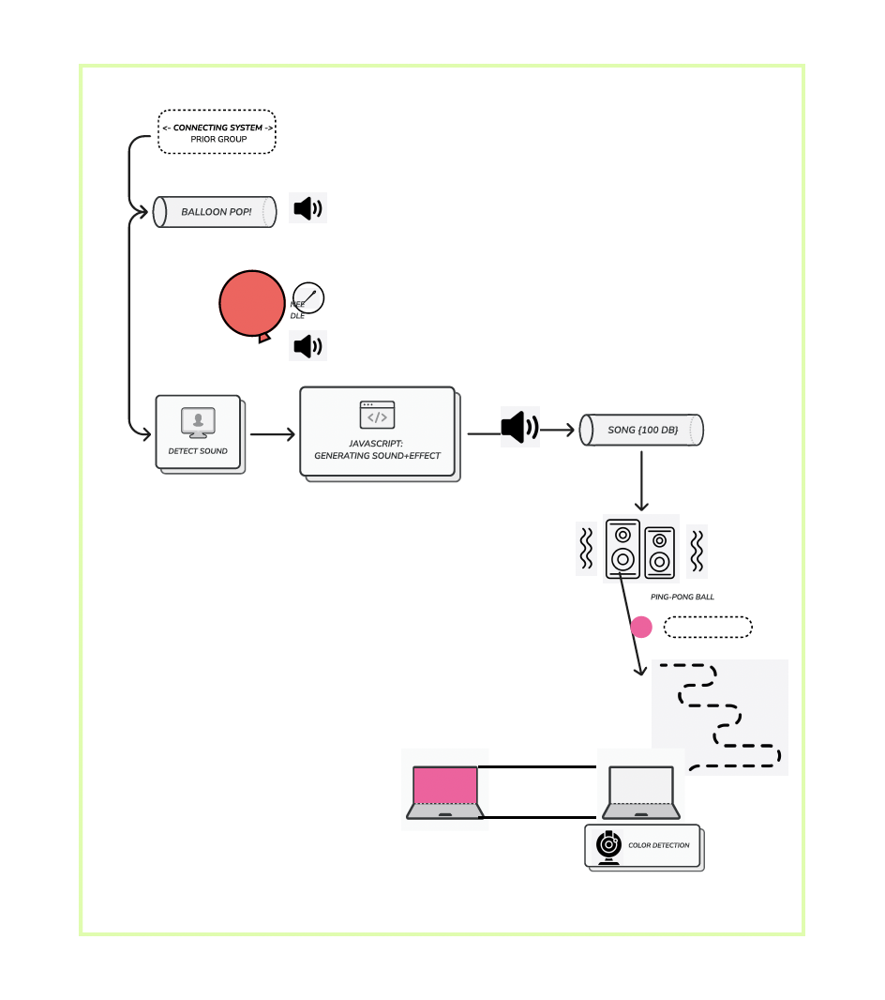

Several diagrams are used to explain the complex interactions.
The user journey map details the experiences and emotional responses of residents over time as they navigate the impact of urban development. It highlights key events and interactions, such as government announcements and community responses, from learning about the development to experiencing rising costs and seeking support.
User Journey Highs/Lows visualizes the highs and lows of the user journey, representing the emotional engagement of residents at different stages of the urban development process. It shows peaks and troughs corresponding to key events and their impact on residents.
System Diagram illustrates the flow of resources and interactions within the system, showing how urban development activities influence housing prices and availability. It highlights the stocks and flows of housing units and the feedback loops that adjust development policies.
Stakeholder Map identifies and categorizes the primary stakeholders involved in the system, including residents, government officials, developers, and community organizations. It shows the influence and interest of each stakeholder in relation to housing affordability and urban development.
User Journey: Multiple Users depicts the journey of multiple stakeholders, including government officials, developers, residents, and community organizations. It shows how each group interacts with the system and the steps they take from announcement to outcome, emphasizing their interconnected roles and actions.
Rube Goldberg System
Hyped

Our Rube Goldberg-inspired system starts by detecting the sound of a balloon popping,
which triggers the playback of a sound file. The vibrations from the speaker then set a lightweight object,
such as a ping pong ball, into motion down a carefully designed track.
Once the object reaches the end of the track and lands on a designated placeholder, a camera captures its color.
The detected color is then used to change the screen background to match, creating a visually dynamic and interactive experience that showcases the seamless integration of sound,
motion, and color detection technology.
2 – Authorship
In my design practice, my authorship philosophy centers on balancing "lock-in" and flexibility to enhance human creativity, inclusivity, and ethical responsibility. This approach draws from my varied experiences in community-focused and commercial design projects. I dive into community-focused initiatives to satisfy my curiosity and desire to experiment and innovate, addressing both existing problems and undiscovered needs.
Lanier’s idea of "lock-in" shows how rigid standards can stifle innovation. For experts, lock-in offers consistent workflows that boost productivity. For example, advanced design software should provide robust tools for experienced users. Non-expert users, however, need flexibility to tailor their experience. Design tools should have simplified modes and tutorials for beginners, with customizable options for advanced users to strike this balance.
Users creating with AI tools should be credited as co-authors to honor their input. AI-generated content shouldn't hold copyrights, but the datasets used should be acknowledged. This ensures transparency and respects all contributors. For example, an AI design tool that suggests layouts should attribute user input and recognize the datasets it uses. When creating an AI-driven design tool, it’s crucial to avoid reinforcing stereotypes or excluding styles, thus promoting inclusivity.
I emphasize the importance of recognizing different user needs. Similarly, systems thinking involves understanding the roles of various stakeholders by addressing the specific needs of each group, whether, through tailored user interfaces for experts and non-experts or inclusive policies to ensure that the system remains balanced and equitable.
I believe that diverse perspectives ensure ethical and inclusive design, so these people should have control in my practice. This fosters collaboration among all stakeholders and enhances the quality of the design process.
Examples of Authorship Models
Are.na vs. Pinterest: Are.na emphasizes citation, giving credit for collected content and fostering deeper engagement. Unlike Pinterest, which often obscures original creators, Are.na promotes transparency and respect for creative work.
Medium vs. Traditional Publishing: Medium allows anyone to share their work, supporting diverse voices. Traditional publishing is exclusive, often limiting content to polished pieces. Medium's approach encourages authenticity and broad participation.
Behance vs. Dribbble (on Community and Feedback): Behance encourages community feedback and collaboration among creatives, allowing users to share projects and receive constructive input. This open exchange fosters growth and inspiration. Dribbble, while also a platform for creatives, often emphasizes polished, final pieces and can sometimes lack the collaborative spirit found in Behance. A blend of Behance's community engagement with Dribbble's focus on quality can provide a balanced environment for both development and presentation.
Diving into our unique interactive zine, where data becomes art through collective creativity. Join us in a playful journey of choosing animals, foods, and drinks to create dynamic datasets. Each selection contributes to a collaborative masterpiece, revealing surprising insights and fostering a deeper connection with data. Experience the magic of co-creation and see how your choices, combined with others, shape our final creation. Ready to innovate and explore? Start your adventure now!
In collaboration with Fern Itthisaeng, Kim Kitae, and Julia Kwon
3 – Politics
“Reviving Thai Craft Communities through Creative Arts Districts”
the heart of Bangkok, traditional Thai craft communities are struggling to survive amidst rapid urban development. As new buildings rise, these artisans are being pushed out, losing not only their homes but their cultural heritage. They face tough competition from modern industries, making it hard to sustain their craft businesses. With younger generations moving away and fewer people involved, traditional techniques risk being lost forever. The community spirit is fading, and without exposure and support, these beautiful crafts could disappear. Establishing creative arts districts can revive these communities, preserving their unique culture and boosting their local economy.
Data Sources and Formats
Geographic distribution of craft communities in Bangkok
Format: CSV with latitude, longitude, and description data
Source: Local government websites, GIS databases, and community organizations
Bangkok Craft Communities Map
Creative Business Status
Number and utilization of buildings in a Creative Economy District
Community Life and Culture Text Data
Format: Text documents (DOCX, PDF)
Source: Descriptions and historical accounts from local historians, community records, and reports
Interview Quotes from Local Residents
Format: Text documents (DOCX, PDF)
Source: Transcriptions from interviews with community members, local artisans, and stakeholders
Data Manifesto
In my future practice, I see data as a powerful tool for visualization and storytelling. Quantitative data provides the foundation, revealing patterns and trends that help us understand broader shifts. Qualitative interviews bring in personal stories and insights, adding a human element to the data. Geospatial data helps map out where these events and trends are occurring, giving a clear picture of the spatial dynamics at play. Historical texts link past and present, showing how traditions have evolved over time. Visual documentation, through photos and videos, captures the current state of communities and their activities. Together, these datasets offer a comprehensive view of traditional Thai craft communities. They highlight the challenges of urban development, economic pressures, and the need for cultural preservation. At the same time, they show the potential for revitalization through creative arts districts. This mix of data types supports my belief that targeted interventions can help sustain and grow these communities.
4 – Governance
Prototype 1: Narrative x Data Visualization x Google Street View & Photoshop x P5.js
>
"Hidden within the bustling streets of Bangkok, these doorways are the silent guardians of our cultural heritage. Each entrance leads to a world where traditional crafts thrive amidst urban chaos. By unveiling these hidden gems, we aim to preserve their stories and celebrate the rich tapestry of our past. Let us walk through these doors and embrace the beauty and resilience of our craft communities."
Prototype 2: Narrative x Mapping x Audio Visual Experience x Mapbox
Prototype 3: Narrative x x Data Visualization x p5js
"Bangkok Memory Tiles"
Interactive, conceptual tiles are installed in public spaces, where stepping on tiles triggers visual and auditory experiences related to Bangkok’s cultural heritage. In the center, a larger interactive panel allows users to record and share their stories, contributing to the community's collective memory and participatory governance.